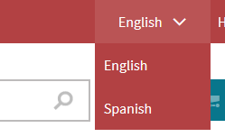

Creating language selectors
To create a language selector on a page, use the Language data source web part in combination with the Basic repeater web part.
Place the Language data source web part on a page. The data source generates 'CultureCode', 'CultureName', and 'URL' (the URL is culture specific) fields.
Configure the web part and copy the value of the Web part control ID property.
Place the Basic repeater web part on the page and configure it.
In the Data source name property, paste the copied Web part control ID value from the data source web part.
In the Content before and Content after field, add the markup for the language selector. For example:
Content before<divclass="language-selection">{% LocalizationContext.CurrentCulture.CultureShortName %}</div><navrole="navigation"><ulclass="language-items">Content after</ul></nav>Access the data source fields in the transformation. For example:
Text / XML transformation code<li><atitle="{% CultureName %}"href="{% HTMLEncode(URL) %} ">{% CultureName %}</a></li>Save & Close.
Style the markup in the CSS stylesheets application.
The page now lists the available cultures.

A language selector displayed on the sample Dancing Goat website
Localizing the names of cultures
By default, the system displays the names of cultures in English. You can create resource strings for specific culture codes and access them using the following macro code:
{% cultureLocalizedName = GetResourceString(CurrentSite.SiteName + "." + CultureCode); return; %}You would then use the cultureLocalizedName variable in the transformation code instead of the CultureName source field. This allows you to display custom culture names instead of culture codes. The Dancing Goat sample site uses the same approach to build its language selector.
Renaming the language selection parameter
The default name of the language selection parameter is lang. To rename the parameter:
Add the CMSLanguageParameterName key into the /configuration/appSettings section of your application's web.config file.
Enter the new name as the key's value.
<add key="CMSLanguageParameterName"value="sprache"/>
Even though switching between languages using URL query string parameters is the default approach, it is not recommended for live production websites. Parameters make URLs more confusing and are not friendly toward search engines. Instead, you can configure the system to use one of the options described in Configuring URLs for multilingual websites.